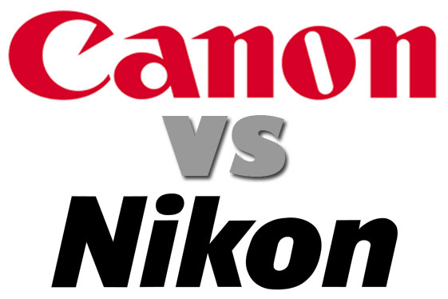
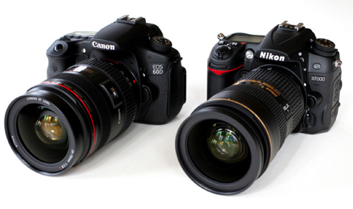
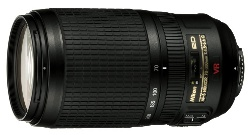
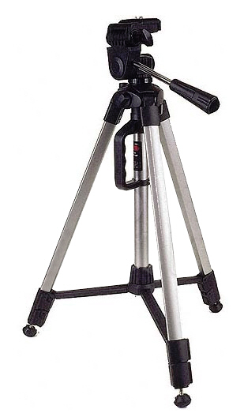
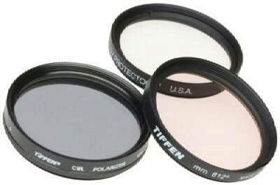
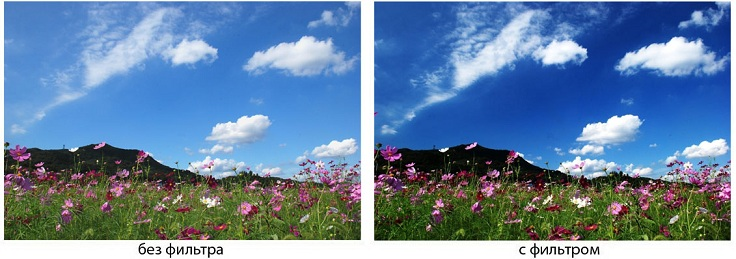

Процесс выбора зеркальной камеры имеет свои особенности, абсолютно несвойственные этой операции для обычных любительских аппаратов, и в 90% случаев, сводится к ответу на вопрос, вынесенный в заголовок раздела. Объясним почему
Обе компании являются несомненными лидерами в сегменте зеркальных камер, и значимого преимущества в качестве съемки у моделей сопоставимого класса нет. Конечно, кроме Canon и Nikon свои зеркальные камеры предлагают и другие компании, среди которых Sony и Pentax. Камеры этих производителей имеют свои уникальные особенности, но из-за небольшой популярности к ним довольно сложно приобрести всю необходимую оптику и аксессуары, что в долгосрочной перспективе сводит на нет преимущества системы в целом. Идем дальше – в силу грамотной маркетинговой политики у каждого из производителей есть практически полный аналог предложению конкурента в любом классе (от бюджетного до топового) по сравнимой стоимости. Если у кого-то из двух игроков появляется особая функция, способная оказать существенное влияние на выбор, то вторая компания в максимально короткие сроки разрабатывает свой аналог. Похоже, что эта война за лидерство не прекратится никогда, что определенно идет на пользу покупателям, поскольку ведет к повышению качества и снижению цены. Но как же все-таки новичку выбрать свою первую «зеркалку»?
По нашему мнению, ключевым параметром в такой ситуации является удобство использования, которое можно прочувствовать лишь во время реального «тест-драйва». Зайдите в ближайший фотомагазин, по очереди возьмите в руки фотоаппараты обеих марок и попробуйте уловить различия в их эргономике – какая камера лежит в ладони как влитая, все кнопки и колеса находятся именно там где надо, а какая так и норовит выпасть из рук. Да, практически к любому нюансу можно привыкнуть со временем, но в условиях минимального количества критериев выбора эргономика имеет весомое значение.
Очень важно понимать, что выбор определенного бренда в большинстве случаев приковывает вас к его продукции навсегда. Процесс привыкания происходит по типичной схеме: покупка «зеркалки» начального уровня со стандартным объективом; период начального освоения и приобретение еще нескольких специализированных объективов. Затем происходит переход на следующий уровень мастерства, сопровождаемый необходимостью приобретения камеры более высокого класса и выбор доступных вариантов ограничивается исключительно любимым брендом, так как солидный парк дорогих и качественных объективов совместим только с его камерами. Впрочем, есть тут и положительный момент, который состоит в том, что вы можете на свое усмотрение использовать ваши объективы и камеры, собирая оптимальный «конструктор» под требуемые в данный момент условия съемки.
Широкоугольный объектив (широкоугольник). Фокусное расстояние до 35 мм. Этот объектив заставляют близкие объекты казаться еще ближе, а удаленные объекты еще дальше, создавая при этом сильное ощущение перспективы. Применяется при съемке пейзажей, архитектуры, в тесных помещениях.
Нормальный объектив (стандартный). Фокусное расстояние от 36 до 70 мм. Фокусное расстояние такого объектива примерно равно диагонали кадра. Человеческий глаз обеспечивает угол зрения около 50 градусов, что и обеспечивать данный объектив, то есть изображение приближено к тому, что мы с вами обычно видим, поэтому он и называется нормальный объектив. Он применяется при съемке портретов, чтобы не допустить искажения лиц.
Телеобъектив. Такой вид объектива имеет фокусное расстояние более 70 мм. Благодаря этому он значительно увеличивает предметы. Он применяется в спорте и любой другой репортажной съемке, где невозможно подойти ближе к снимаемому объекту.
Штатив представляет собой треногу (часто штативом называется сама тренога) и заменяемую штативную головку с площадкой. В более простой конструкции эти элементы соединены воедино и неразборны.
Главное в штативе – это ноги. Это могут быть три ноги или одна, называются они соответственно – тренога или монопод. Как правило, большей популярностью пользуются треноги, так как моноподы используются в основном в репортажной и спортивной съемке.
Штатив состоит из ног, распорок, фиксаторов и центральной штанги. Самое главное в ногах штатива – это количество секций и крепления. Чаще всего треноги состоят из трех секций, реже из четырех, чем больше секций, тем более устойчив штатив.
Распорки делают конструкцию устойчивее, но при этом лишают возможности расставить ноги широко. Как правило, распорки есть у бюджетных моделей.
Центральная штанга двигается вертикально, позволяя точно установить высоту камеры. Это намного удобнее, чем подгонять каждую из трех ног к нужной высоте. Но чем выше штанга, тем больше амплитуда колебаний камеры, поэтому желательно не поднимать до максимума центральную штангу.
Под центральной штангой бывает небольшой крюк. Он позволят прикрепить к штанге груз, который будет тушить колебания штатива и сделает его более устойчивым.

Бесцветный прозрачный фильтр, который будет полезен каждому владельцу цифровика. Можете купить его вместе с камерой и сразу прикрутить, так как он защитит линзу объектива от отпечатков пальцев, пыли, грязи, а самое главное – от царапин и механических повреждений. Фильтр будет полезен как на пляже, где он предохранит от морских брызг и песка, так и в походах, поездках. Согласитесь, ведь лучше сменить фильтр, чем камеру или объектив.
 Для защиты объектива прекрасно подойдут и светофильтры UV, SKY. UV –
ультрафиолетовый фильтр. Матрица и фотопленка восприимчивы к ультрафиолетовому излучению,
на снимках становятся заметными легкая дымка, голубоватый оттенок. Эффект усиливается при
съемке в горах либо объектов, находящихся на очень большом расстоянии, а в особенности
на море, где в солнечный день много УФ лучей. УФ-фильтр не влияет на контрастность.
Его можно не снимать с объектива, то есть использовать постоянно, при этом надо помнить,
что он не «фильтрует» смог и туман.
Применим он и для черно-белой фотографии: белый цвет будет менее тусклым.
Для защиты объектива прекрасно подойдут и светофильтры UV, SKY. UV –
ультрафиолетовый фильтр. Матрица и фотопленка восприимчивы к ультрафиолетовому излучению,
на снимках становятся заметными легкая дымка, голубоватый оттенок. Эффект усиливается при
съемке в горах либо объектов, находящихся на очень большом расстоянии, а в особенности
на море, где в солнечный день много УФ лучей. УФ-фильтр не влияет на контрастность.
Его можно не снимать с объектива, то есть использовать постоянно, при этом надо помнить,
что он не «фильтрует» смог и туман.
Применим он и для черно-белой фотографии: белый цвет будет менее тусклым.
Поляризационный фильтр

По популярности и частоте использования он уступает первенство лишь утрафиолетовым фильтрам. Поляризационный фильтр поможет избавиться от бликов при съемке отражающих поверхностей – воды, стекла. Он затемняет голубое небо, цветовой баланс при этом не меняется. Фильтр представляет собой две линзы, одна из которых неподвижна, а вторая – вращающаяся. Такая конструкция позволяет подбирать цветовую насыщенность, свечение бликов, контраст. На оправы фильтров иногда наносятся шкала или точки для помощи в установке нужного угла.Хорошо использовать этот светофильтр и для черно-белой фотографии, например совместно с красным светофильтром. Определить результат, который даст фильтр, можно по стрелкам наручных часов. Например, когда солнце над головой, эффект будет наблюдаться в диапазоне от «2 до 6 часов», минимальный эффект в районе «от 3 до 9 часов».
После вращения фильтра зона максимального эффекта будет находиться примерно в 90 градусах от начального положения. При повороте на 180 градусов изображение вернется в тот же вид, что и в начальном положении. При съемке с этими светофильтрами не меняется передача участков неба рядом с солнцем, а также сильно удаленных от солнца. Перед съемкой определите, влияет ли поляризационный светофильтр на цвет и насыщенность, посмотрев через него.
Цветокоррекционные фильтры, или конверсионные, помогают получить точную цветопередачу при съемке со сложными условиями освещения, когда, например, автоматика камеры не справится с балансом белого. Фильтр вносит сдвиг в цветовую температуру, этот сдвиг измеряется в майредах (mired). У каждого фильтра свое значение сдвига. Для точного подбора понадобится прибор – колориметр, специальные таблицы или большой опыт. Цветоусиливающие фильтры позволяют выделить один избранный цвет – синий, красный, зеленый. Фильтры подчеркивают определенный цвет, не изменяя тональности фотографии.